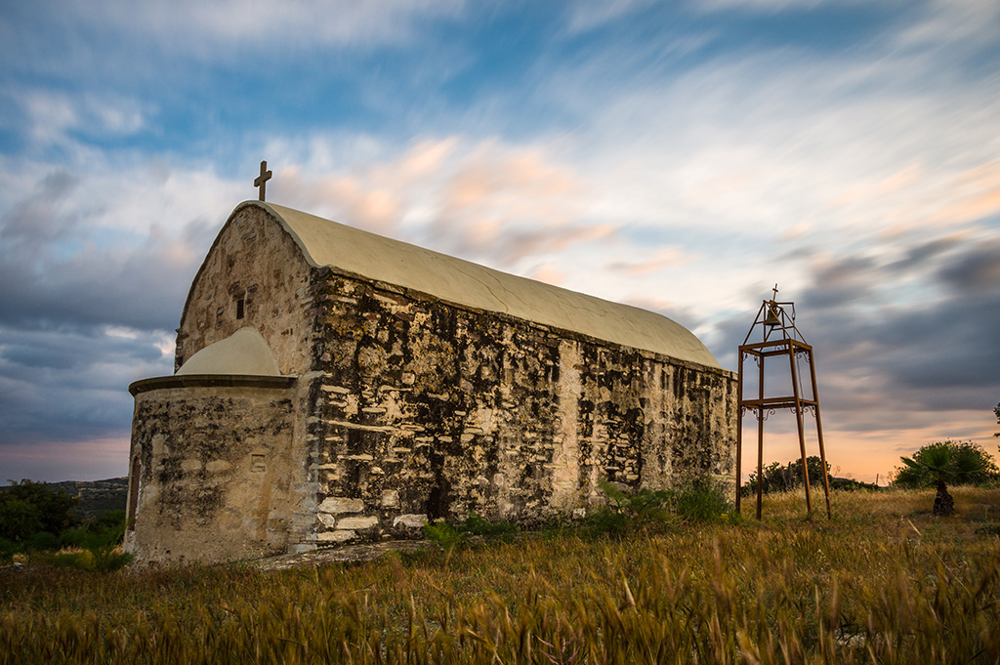

The church of Panagia Astathkiotissa belongs to the community of Agios Theodoros and it is located on the low hills between the villages of Agios Theodoros, Kophinou and Alaminos. The monument is surrounded by the agricultural lands of the three villages below, it overlooks the sea on the south, while on the northeast it looks across to the imposing Stavrovouni mountain and its monastery of the Cross
Ο ναός της Παναγίας Ασταθκιώτισσας ανήκει στην κοινότητα του Αγίου Θεοδώρου και βρίσκεται μεταξύ των σημερινών χωριών της Κοφίνου, της Αλαμινού και του Αγίου Θεοδώρου. Κτισμένη στην κορυφή λόφου που δεσπόζει των εύφορων κάμπων των τριών χωριών, ατενίζει τη θάλασσα στα νότια, ενώ στα βορειοανατολικά αντικρύζει το επιβλητικό Σταυροβούνι με την ομώνυμη ανδρική μονή στην κορυφή του.
Panayia Astathkiotissa kilisesi Ayios Theodoros cemaatine aittir ve Ayios Theodoros, Kofinu ve Alaminos köyleri arasındaki alçak tepelerde yer almaktadır. Anıt, aşağıdaki üç köyün tarım arazileriyle çevrilidir, güneyden denize bakarken, kuzeydoğuda heybetli Stavrovuni dağına ve Haç manastırına bakmaktadır.
The single-aisled barrel-vaulted church of Panagia was built during the Venetian period, towards the end of the 15th or early 16th century. According to local tradition, the inhabitants of the area dedicated the church to Virgin Mary Astathkiotissa, the ‘patron of grains’, as the area was rich in cereal production. The name of the church initially derived from the Greek for ‘grain’ (stahi/στάχυ, pl. stahion – stathkion – astathkion). The church of Panagia Astathkiotissa is celebrated by the locals every Thursday after Easter with a memorial service.
Ο ναός ανεγέρθηκε την εποχή της Ενετοκρατίας, στα τέλη του 15ου ή στις αρχές του 16ου αιώνα και ανήκει στον τύπο του μονόκλιτου καμαροσκέπαστου ναού. Σύμφωνα με την τοπική παράδοση, οι κάτοικοι της περιοχής αφιέρωσαν τον ναό στην Παναγία Ασταθκιώτισσα, την «προστάτιδα των δημητριακών», λόγω του ότι η περιοχή υπήρξε πλούσια σε παραγωγή σιτηρών. Το όνομα μάλλον επικράτησε μετά από παραφθορά και επέκταση της λέξης «στάχυ» (δηλ. σταχυού – πλ. σταχυών – σταθύων – σταθκιών – ασταθκιών). Η μνήμη της Παναγίας της Ασταθκιώτισσας τιμάται μέχρι σήμερα από τους κατοίκους της περιοχής κάθε Πέμπτη του Πάσχα με την τέλεση θείας λειτουργίας στο ναό.
Tek koridolu beşik tonozlu Panayia kilisesi, Venedik döneminde, 15. yüzyılın sonlarında veya 16. yüzyılın başlarında inşa edilmiştir. Yerel geleneğe göre, sakinleri bölgenin tahıl üretimi açısından zengin olduğu için kiliseyi 'tahılların koruyucusu' Meryem Ana Astathkiotissa'ya adadılar. Kilisenin adı başlangıçta yunancada 'tahıl' kelimesinden türetilmiş (stahi / στάχυ, pl. stahion - stathkion - astathkion). Panayia Astathkiotissa kilisesi, Paskalya'dan sonra her Perşembe yerel halk tarafından bir anma töreniyle kutlanır.
The church is a humble yet important monument for the local communities. It also comprises a landmark of collective memory in the modern history of the island and in the creation of cultural, religious and national identities. It has been a a place of religious cult by Greek-Orthodox Christians from the Late Middle Ages to today. During 1964-1974, the church was not accessible by the Greek-Cypriots. The abandonment and use of the church as a refuge by Turkish-Cypriot shepherds in 1964-1974 have left their irreparable marks on the monument.
Το μνημείο αποτελεί σήμερα ένα ταπεινό κτίσμα αλλά σημαντικό σημείο αναφοράς για τους κατοίκους της περιοχής. Ταυτόχρονα, αποτελεί τοπόσημο συλλογικής μνήμης σε σχέση με την πρόσφατη ιστορία του νησιού και τη διαμόρφωση πολιτιστικών, θρησκευτικών και εθνικών ταυτοτήτων. Αποτελεί χώρο θρησκευτικής λατρείας για τους ορθόδοξους Χριστιανούς της μεσαιωνικής Κύπρου και της κοινότητας των Ελληνοκυπρίων από την Ενετοκρατία ως σήμερα. Κατά την περίοδο 1964-1974, η εκκλησία δεν ήταν προσβάσιμη από τους Ελληνοκύπριους. Η εγκατάλειψη και η χρήση του ναού από Τουρκοκύπριους βοσκούς κατά την περίοδο των διακοινοτικών ταραχών έχουν αφήσει ανεξίτηλα σημάδια στο μνημείο.
Kilise, yerel topluluklar için mütevazı ama önemli bir anıttır. Aynı zamanda adanın modern tarihinde ve kültürel, dini ve ulusal kimliklerin yaratılmasında kolektif hafızanın bir dönüm noktasını oluşturur. Geç Ortaçağ'dan günümüze Rum-Ortodoks Hıristiyanların dini ibadet yeri olmuştur. 1964-1974 döneminde Kıbrıslı Rumlar kiliseye erişemiyordu. Kilisenin 1964-1974 yılların arasında terk edilmesi ve Kıbrıslı Türk çobanları tarafından kullanılması anıtta onarılamaz izlerini bırakmıştır.
The church has two entrances, one on the south and another in the centre of the west wall. Upon entering the church, you see the fragmented layers of wall paintings. The wall frescoes depict saints in medallions and narrative scenes from the New Testament, such as the Announciation, the Presentation of Virgin Mary, the Birth and the Crucifixion of Christ. The vivid scenes of sinners in hell on the east supporting arch, however, are of special religious and artistic value. Such examples in religious visual art provide interesting information about the ‘moral issues’ of Christian communities in medieval Cyprus and the ‘cult of local saints’ from the Middle Ages to today.
Η εκκλησία της Παναγίας διαθέτει δύο εισόδους, μία στον νότιο τοίχο και μία στο κέντρο του δυτικού. Καθώς εισερχόμαστε στο ναό, διαπιστώνουμε ότι εσωτερικά και σε διάφορα σημεία σώζονται αποσπασματικά στρώματα τοιχογραφιών με μορφές αγίων σε μετάλλια και θέματα από την Καινή Διαθήκη, όπως ο Ευαγγελισμός της Θεοτόκου, η Γέννηση του Ιησού, η Σταύρωση και τα Εισόδια της Θεοτόκου, ενώ μεγάλης θρησκευτικής και καλλιτεχνικής αξίας αποτελούν οι «σκηνές των κολασμένων» στο εσωράχιο του ανατολικού τόξου στήριξης της θολωτής στέγης. Τέτοιου είδους εικονογραφικά θέματα παρέχουν σημαντικές πληροφορίες σχετικά με τα πλέον συνήθη αμαρτήματα των χριστιανικών κοινοτήτων κατά τους μεσαιωνικούς χρόνους αλλά και τη λατρεία τοπικών αγίων στην Κύπρο από την Ενετοκρατία ως σήμερα.
Kilisenin biri güneyde diğeri batı duvarının ortasında olmak üzere iki girişi vardır. Kiliseye girdiğinizde, duvar resimlerinin parçalanmış katmanlarını görüyorsunuz. Duvar freskleri, madalyonlarda Azizleri ve Meryem Ana yortusu, Meryem Ana'nın Takdimi, İsa'nın Doğumu ve Çarmıha Gerilmesi gibi Yeni Ahit'ten anlatı sahnelerinde tasvir ediyor. Bununla birlikte, kemeri destekleyen doğudaki cehennemdeki günahkârların canlı sahneleri özel dini ve sanatsal değere sahiptir. Dini görsel sanattaki bu tür örnekler, Orta Çağ Kıbrıs'ındaki Hristiyan topluluklarının 'ahlaki meseleleri' ve Orta Çağ'dan günümüze 'yerel azizlerin ibadet edilmesi' hakkında ilginç bilgiler sağlar.
More than half of the wall frescoes bear marks of decay as a result of abandonment and neglect.
Many locals recall that Turkish-Cypriot shepherds lit fires inside the church when they used it
as a shelter in 1964-1974. The fires created a layer of soot over many of the wall paintings,
still visible today. Other evidence of destruction on the painted walls (i.e. graffiti of dates,
Turkish-Cypriot names and symbols) dates to the same period.
The Cyprus Department of Antiquities undertook a conservation programme of the wall
paintings during the period 1980-1990. A new conservation project started in 2019 as part of a
broader management plan for the monument.
Η εγκατάλειψη και η φθορά του χρόνου συντέλεσαν στην καταστροφή περισσότερων από τις μισές
τοιχογραφίες. Πολλές από αυτές έχουν μαυρίσει, αφού, σύμφωνα με μαρτυρίες ντόπιων, Τουρκοκύπριοι
βοσκοί ανάβαν φωτιές στο εσωτερικό του ναού, όταν χρησιμοποιούσαν το μνημείο ως εποχιακό
καταφύγιο. Μεγάλο μέρος του τοιχογραφικού διακόσμου έχει επίσης δεχτεί μεταγενέστερες
καταστροφικές επεμβάσεις, όπως τα ακιδογραφήματα (χαράγματα χρονολογιών, σχημάτων και
τουρκοκυπριακών ονομάτων) που έγιναν κατά την περίοδο 1964-1974 σε πολλά σημεία των τοίχων του
μνημείου.
Το Τμήμα Αρχαιοτήτων της Κυπριακής Δημοκρατίας προχώρησε σε εργασίες συντήρησης του ναού και
των τοιχογραφιών κατά τις δεκαετίες 1980-1990. Το 2019 ξεκίνησε νέος κύκλος συντήρησης του
μνημείου και των τοιχογραφιών από το Τμήμα Αρχαιοτήτων, στο πλαίσιο ενός ευρύτερου προγράμματος
για την προστασία και ανάδειξη του ναού, το οποίο περιλαμβάνει τον εξωραϊσμό του περιβάλλοντος
χώρου.
Duvar fresklerinin yarısından fazlası terk edilme ve ihmal sonucu çürüme izleri taşıyor. Yerel
halk, Kıbrıslı Türk çobanların 1964-1974 yıllarında kiliseyi sığınak olarak kullandıklarında
kilisenin içinde ateş yaktığını hatırlıyor. Ateş, bugün hala görülebilen birçok duvar resminin
üzerinde bir kurum tabakası oluşturdu. Renkli duvarlardaki diğer tahribat kanıtı (örn. tarih,
Kıbrıs Türk isimleri ve semboller belirten duvar yazıları) aynı döneme aittir
Kıbrıs Eski Eserler Dairesi, 1980-1990 döneminde duvar resimlerinin konservasyon programını
yürütmüştür. Anıt için daha geniş bir yönetim planının parçası olarak 2019'da yeni bir koruma
projesi başladı.

.